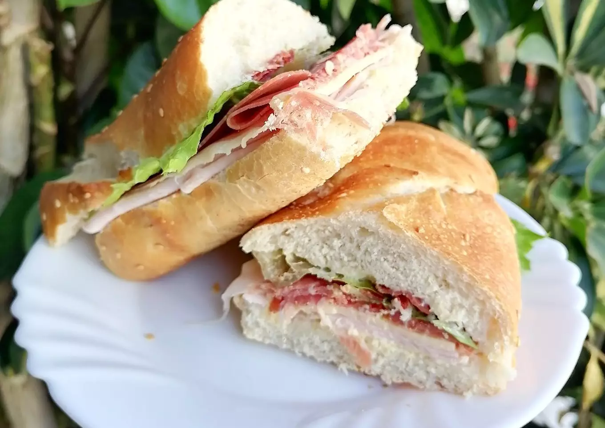

Baguette de Jamon

Baguette de Jamon
Una de las cosas que más me gusta comer cuando tengo hambre y ganas de cocinar algo muy sencillo, es una baguette de jamón serrano. Te dejo aquí mi receta.
Ingredientes
- 1 pza baguette grande
- 100 gr jamón serrano
- 100 gr pechuga de pavo
- 4 rebanadas queso gouda
- 1 chorrito aceite de oliva
Procedimiento
- Vamos a cortar la baguette en dos y luego a la mitad. Untamos unatamos los panes de mayonesa y a dos de ellos mostaza. Agregamos un chorrito de aceite de oliva en cada pan. Ponemos encima las rebanadas de queso, de jamón serrano y de pechuga de pavo, hasta arriba la lechuga y cerramos.
- Lista para disfrutar. Si te gustan mucho los vegetales puedes agregar jitomate, cebolla y aguacate.